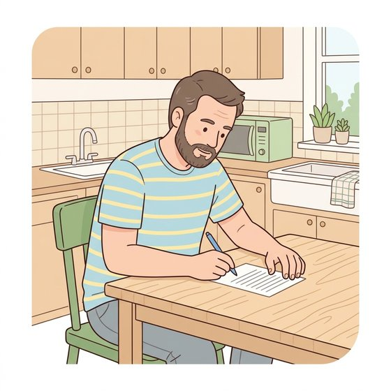
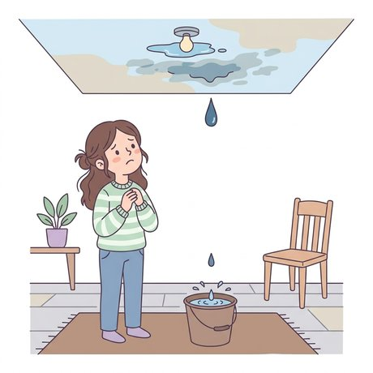
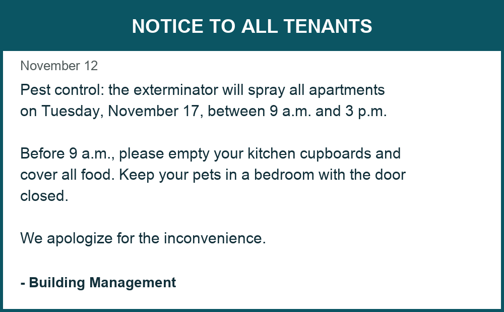

2. Listen (p. 111). Ventures audio: write the letter of the conversation, circle the time expression. Then the Time words game.
3. Simple past - regular verbs (p. 112). cleaned / didn't clean, spelling changes (dried, emptied, mopped). Then the Spell the past and Yesterday ... games.VIDEOEllii - Simple Past (grammar, 6 min)
4. Did you ...? (p. 113). Look at the Ramirez family. Did Mr. Ramirez mop the floor? Yes, he did. Then the Did he ...? Did she ...? game. Communicate: Find a classmate who ... (breakout rooms).VIDEOEasy English - What did you do? (5 min)
Day 2: Notes and Household Objects (Ventures 1, Unit 9, pp. 115-120)

1. Recap (12 min). Yesterday: Linda's busy evening (bought, paid, got, made, swept, didn't pay, fell asleep), the notes (allowance = pocket money). Who bought the groceries? - Mom did. / What did Dad do? - He cut the grass. Then the Who ...? or What did ...? and Irregular verbs 2 games.VIDEOSimple past Wh- questions (4 min)
2. Reading: Mark's note (p. 116, 18 min). Before you read: Where is Mark? What is he writing about? Listen and read. Yes or No, correct the sentences, answer the questions.
4. Writing a note (pp. 118-119, 30 min). Talk: who does the chores in your home? Breakout rooms: interview 3 classmates (2 chores they did, 1 they didn't do). Complete Irina's and Mary's notes. Then the Complete the note game. Write a note to a family member; read it to a partner.
5. Another view: job duties chart (p. 120, 20 min). Read the SaveMore chart and fill in the answers. Then the Read the chart game (a new chart). Pairs: Who locked the doors? Did Steve empty the trash? What did Ann do?
Day 3: Or Questions - Present and Past (Ventures 1, Unit 9, p. 121)
1. Warm-up (10 min). Two columns on the whiteboard: What chores do you USUALLY do? What chores did you do YESTERDAY? Students give one of each.
2. Grammar connections: or questions (p. 121 A, 20 min). Does Juan usually wash or sweep the floor? - He usually sweeps the floor. Look at the pictures and ask and answer (Feng, Mei, Santiago ...). Remember he / she + s. Then the Or questions game.VIDEOEllii - Simple present (5 min)
3. Talk with a partner (p. 121 B, 15 min). Breakout rooms: Do you usually wash the dishes or use a dishwasher? ... go to the laundromat? ... mop the floors or vacuum the rugs? Then ask the same questions in the past: Did you wash the dishes or use the dishwasher yesterday?
HOUSING PROBLEMS (Avenue: Dealing with Household Problems)
Day 4: Household Items and Problems (Avenue lessons 2-5)

1. Warm-up (10 min). Look at the picture. What's the problem? What can you do? Did you ever have a problem in your apartment or house? What was it? (past tense from the last unit)
2. Household items (20 min). Avenue lesson 2 on your screen: faucet, sink, drain, toilet, tiles, window, window screen, door lock, smoke detector, thermostat, heating, ceiling fan, refrigerator. Listen, repeat, spell. Then the Where is the problem? game.
3. Describing problems (25 min). Avenue lesson 3: dripping, peeling, leaking, beeping / cracked, plugged, broken, ripped, noisy, slippery, moldy / mice, cockroaches, ants, a hole. Then the What's the problem? and Describe the problem games.VIDEOHousehold problems in English (Vocabucy, 1 min)
4. Grammar (20 min). The faucet IS dripping. The tiles ARE cracked. The heating ISN'T working. THERE IS a hole in the wall. THERE ARE mice in the kitchen. Then the is, are or isn't? game.
5. Speaking (20 min). Breakout rooms: one student shows a picture from the Day 4 games, the partner says the problem (The sink is plugged.). Then: What problems did you have in your home? What did you do?
6. Spelling and dictation (10 min). Dictate 6 words (faucet, ceiling, plugged, dripping, neighbours, cockroaches). Then the Spell it game.
Homework (Day 4): Avenue - Dealing with Household Problems, lessons 2, 3, 4 and 5; the Day 4 handout; and the Homework - Housing Problems Day 4 form (35 questions).
Day 5: Listening to Instructions (Avenue lesson 6)
1. Recap (10 min). Day 4 pictures: What's the problem? The faucet is dripping. There are mice in the kitchen. Who can fix it?
2. Avenue lesson 6 on your screen (25 min). What do you expect to hear? Play the Plugaway commercial: put the instructions in order. Then the mice infomercial: answer the 6 questions together.
3. Instructions = imperatives (20 min). Add a cupful. Put the food away. Don't take the battery out. Listen and repeat the carpet stain and kettle instructions (Avenue). Then the Instructions game.
4. Linking words (15 min). Start: First / To begin with / Start by ... - Middle: Then / Next / After that - End: Finally / Lastly. Then the Step by step and First or last? games.
5. Listen to instructions (20 min). Play the tracks below. Students number the steps and retell them. Then the What do you use? game.
Track 1 - How to fix a plugged sink
Listen and number the steps (handout A). Play twice.
Track 2 - How to keep ants out of your kitchen
Listen. Write the 5 steps with First, Then, Next, After that, Finally.
Track 3 - A beeping smoke detector
Listen. What do you need? (a strong chair, a new battery) What is the last step?
6. Groups (15 min). Breakout rooms: write 4 instructions for a small problem (a stain on a shirt, ants, a plugged toilet). Use First, Then, Next, Finally. Read them to the class.
Homework (Day 5): Avenue - Dealing with Household Problems, lesson 6; the Day 5 handout; and the Day 5 homework form (link in the handout).
Day 6: Talking to Your Landlord (Avenue lesson 7)
1. Recap (10 min). Day 5: give 3 instructions for a plugged sink with First, Then, Finally. Day 4 words: What's the problem?
2. Avenue lesson 7 on your screen (25 min). Listen to Mr. Aziz and the superintendent: answer the questions together. The 5 steps of a call: identify yourself - say why you are calling - describe the problem - make a request - close politely. Then the Steps of the call game.VIDEOCalling about a problem with your apartment (2 min)
3. Polite requests (20 min). Could you + base verb ...? Would you mind + verb-ING ...? I wonder if you could ... Can you ..., please? Rising intonation at the end. Then the Polite or not? and Could you ...? Would you mind ...? games.
4. Listen to two calls (15 min). Play the tracks below. Find the 5 steps. Urgent or not? Then the Is it urgent? and Answer the landlord games.
Track 1 - Mr. Park calls the superintendent
Find the 5 steps. What is the problem? When did it start? Is it urgent? When can the plumber come?
Track 2 - Mrs. Ruiz calls the landlord
What is the problem? Why is it urgent? What will the landlord do?
5. Role play (25 min). Model one call with a student. Breakout rooms in threes: tenant, landlord, observer - then change roles. Use the problem cards from the Day 4 pictures (dripping faucet, ants, ripped screen ...).
Homework (Day 6): Avenue - Dealing with Household Problems, lesson 7; the Day 6 handout; and the Day 6 homework form (link in the handout).
Day 7: Reading a Notice from Your Landlord (Avenue lesson 8)

1. Recap (10 min). Day 6: call the landlord in 5 steps with a polite request. Who can do it with me?
2. Three questions (15 min). When you get a notice, ask: 1. Why is my landlord writing? 2. What do I need to remember? 3. Is there anything I need to do? Read the notice above together and answer the 3 questions.
3. Avenue lesson 8 on your screen (25 min). New words: use other information, examples (such as, like, e.g.) or synonyms. Refrain, upgrades, unpleasant odour, proper, evicted. Then the Guess the word game.
4. Read more notices (25 min). Laundry room, snow removal, fire alarm testing (Read the notice game). Scan for the day, the time and the phone number. What do I need to do?
5. Pairs (15 min). Breakout rooms: Partner A reads a notice aloud, Partner B asks the 3 questions. Change.
6. Wrap-up (10 min). Look at the tone: polite (We apologize for the inconvenience) or serious (may be towed, may be evicted)?
Homework (Day 7): Avenue - Dealing with Household Problems, lesson 8; the Day 7 handout; and the Day 7 homework form (link in the handout).
Day 1 Games
What chore is it?
Look at the picture. Click the chore.
Score: 0/0Streak: 0Round: 1/10
Yesterday ...
Look at the picture. Choose the past form.
Score: 0/0Streak: 0Round: 1/10
Did he ...? Did she ...?
Look at the picture. Answer the question.
Score: 0/0Streak: 0Round: 1/10
Spell the past
Choose the correct spelling of the past form.
Score: 0/0Streak: 0Round: 1/10
Time words
Read. Choose the time word.
Score: 0/0Streak: 0Round: 1/10
Irregular verbs
Choose the past form. Careful: these verbs do not take -ed!
Score: 0/0Streak: 0Round: 1/10
Day 2 Games
Who ...? or What did ...?
Choose the correct question or answer.
Score: 0/0Streak: 0Round: 1/10
Irregular verbs 2
Choose the past form.
Score: 0/0Streak: 0Round: 1/10
Household objects
Look at the picture. What is it?
Score: 0/0Streak: 0Round: 1/10
What do you do with it?
Look at the object. What do you do with it?
Score: 0/0Streak: 0Round: 1/10
Complete the note
Ana wrote a note to Ben. Choose the correct verb.
Score: 0/0Streak: 0Round: 1/10
Read the chart
Look at the job duties chart. Answer the question.
Score: 0/0Streak: 0Round: 1/10
Day 3 Games
Or questions
Look at the picture. Answer the question.
Score: 0/0Streak: 0Round: 1/10
Present or past?
Read the sentence. Is it present or past?
Score: 0/0Streak: 0Round: 1/10
Choose the verb
Look at the time words. Present or past? Choose the verb.
Score: 0/0Streak: 0Round: 1/10
Do, Does or Did?
Choose the correct word to start the question.
Score: 0/0Streak: 0Round: 1/10
Answer the question
Read the question. Choose the best answer.
Score: 0/0Streak: 0Round: 1/10
Day 4 Games
Where is the problem?
Look at the picture. What has a problem?
Score: 0/0Streak: 0Round: 1/10
What's the problem?
Look at the picture. Choose the sentence.
Score: 0/0Streak: 0Round: 1/10
Describe the problem
Look at the picture. Choose the word.
Score: 0/0Streak: 0Round: 1/10
is, are or isn't?
Choose is, are or isn't.
Score: 0/0Streak: 0Round: 1/10
Spell it
Choose the correct spelling.
Score: 0/0Streak: 0Round: 1/10
Day 5 Games
Instructions (imperatives)
Instructions start with the base verb. Choose the correct word.
Score: 0/0Streak: 0Round: 1/10
Step by step
Look at the step number. Choose the linking word.
Score: 0/0Streak: 0Round: 1/10
First or last?
Think about the instructions. Which step comes first? Which step comes last?
Score: 0/0Streak: 0Round: 1/10
What do you use?
Read the problem. What do you use to fix it?
Score: 0/0Streak: 0Round: 1/10
Day 6 Games
Steps of the call
A phone call to the landlord has 5 steps. Which step is it?
Score: 0/0Streak: 0Round: 1/10
Polite or not?
Read the problem. Choose the POLITE request.
Score: 0/0Streak: 0Round: 1/10
Could you ...? Would you mind ...?
Could you + base verb. Would you mind + verb-ING. Choose the correct form.
Score: 0/0Streak: 0Round: 1/10
Is it urgent?
Urgent = the problem needs action right away. Is it urgent?
Score: 0/0Streak: 0Round: 1/10
Answer the landlord
The landlord asks a question. Choose the best answer.
Score: 0/0Streak: 0Round: 1/10
Day 7 Games
Read the notice
Read the notice. Answer the question.
Score: 0/0Streak: 0Round: 1/10
Guess the word
Read the sentence. Use the other words to guess the meaning.
Score: 0/0Streak: 0Round: 1/10
All Links
Every link was opened and checked before this page went up.